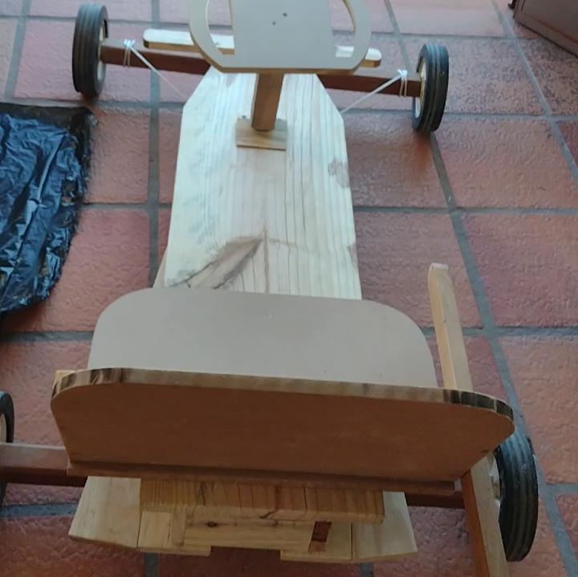
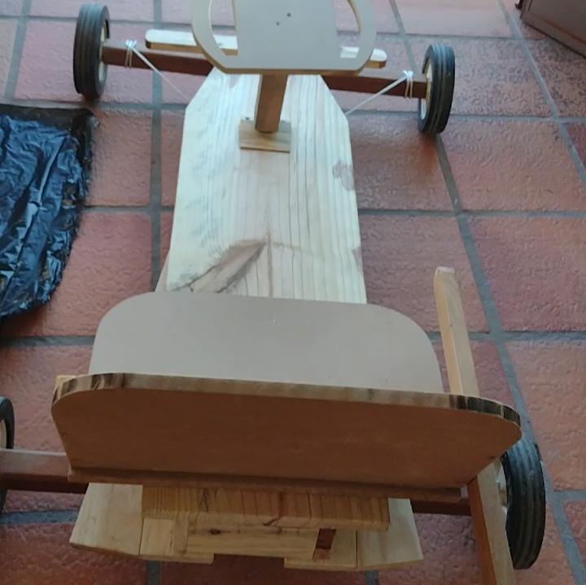

Carrinho de Rolimã
Pesquisa sobre o carrinho
Presquisa sobre o Vento
Quando o carro está em movimento, ele se comporta como se estivesse atravessando uma parede de ar. E quanto maior a velocidade atingida pelo veículo, maior é a ação do ar sobre ele.
O estudo da aerodinâmica tem como principais objetivos reduzir o arrasto e ruído do vento, minimizando a emissão de ruídos, impedindo as forças de sustentação indesejadas e outras causas de instabilidade aerodinâmica em altas velocidades.
Pesquisa sobre o Peso
Peso é o produto da massa pela ação da gravidade, portanto, peso e massa se relacionam, são grandezas proporcionais: quanto maior a força da gravidade, maior será o peso. O que ocorre no espaço é que a massa permanece inalterada e o peso é inexistente (em razão da falta de gravidade).
Pesquisa sobre as Rodas
rodas maiores proporcionam menor aceleração e maior velocidade máxima; as menores favorecem a aceleração, mas reduzem a velocidade máxima.
Pesquisa sobre o Atrito
é a componente horizontal da força de contato que atua sempre que dois corpos entram em choque e há tendência ao movimento. É gerada pela aspericidade dos corpos. A força de atrito é sempre paralela às superfícies em interação e contrária ao movimento relativo entre eles. A lubrificação tem por objetivo reduzir o atrito entre duas superfícies em movimento relativo por meio da introdução de uma substância entre elas rodas maiores proporcionam menor aceleração e maior velocidade máxima; as menores favorecem a aceleração, mas reduzem a velocidade máxima.
Materiais Utilizado
- Tábuas de Madeira
- Parafusos
- Porcas
- Bucha de Tecnil
- Rodas de Carrinho de Grama
- Fita Isolante
- Spray de Tinta Cinza
- Tinta Laranja
- Spray de Tinta Verde
- Graxa
- Corda
Processo de construção
Apresentação do Grupo
No dia 31 de Maio, o grupo POBRETON iniciou os processos de construção do Carrinho de Rolimã, onde os participantes Bruno Hensel, Davi Mohr, Eduardo Baierle, Francesco Maieron e Henrique Arthur, se deslocaram para a loja de o estabelecimento "LucianoMóveis", onde eles disponibilizaram o espaço e as ferramentas para o grupo. Foi um longo processo de aprendizagem e muito trabalho, e depois de 1 semana inteira trabalhando de forma totalmente focada para que o carrinho tivesse a sua melhor aparência e desempenho o Grupo POBRETON finalizou os seus trabalhos e agora estão prontos para a corrida.
Nos vídeos abaixo está todo o nosso processo da contrução do carrinho.
Carrinho Finalizado
.png) 

.png)
Resultado da Corrida
Enfim o dia da corrida chegou, sem dúvida o dia 24 de junho de 2023 ficará marcado em nossas vidas, como uma experiência mágica. Nosso grupo se reuniu com os demais competidores no local escolhido ( Rua Vênancio Aires, parte final da rua que fica em frente ao chafariz ) pela Escola SenacSCS, e lá começou a competição. Tiveram muitos carrinhos muito maneiros, mas para o azar deles, havia o POBRETON que era inparável, fomos passando de fase, até chegar a grande final, onde o nosso carrinho se consagrou campeão da corrida de carrinhos de rolimã. Comemoramos, e ainda ganhamos como recompensa, um Vale Hambúrguer + Batata Frita e registramos o momento com a foto do grupo que está retrada aqui em baixo:
Resenha
O tópico dessa resenha é o desenvolvimento e construção do nosso carrinho de rolimã para a realização de uma atividade na disciplina de física, citarei todas as dificuldades que enfrentamos e a metodologia que utilizamos durante todo esse período.
Como já dito, se trata de um carrinho, igual ao que brincávamos na infância, contudo, aprimorado e metodicamente pensado para cumprir o desafio de obter o melhor resultado na hora de correr, diante dessa informação, podemos iniciar a nossa autoavaliação.
Após ter o conhecimento do que deveria ser feito, partimos para o trabalho pesquisa, fase crucial para o sucesso do produto, subimos diversos dados a respeito de materiais e realizamos simulações físicas online através do site Sims PhEt para selecionar o melhor meio e minimizar a influência das variáveis, como o vento, o peso e o atrito. Foi um momento um tanto complexo e demorado pois este definiria o caminho que seria tomado por todo o restante do projeto, e caso não fosse bem executado dificultaria o andamento do mesmo.
A próxima etapa foi a organização dos materiais que seriam utilizados e a construção, tudo visando a melhor versão do carrinho de rolimã. Aproveitamos todo o espaço favorável e as ferramentas fornecidas pelo integrante Davi Kuhn Mohr e iniciamos a estruturação, primeiramente efetuando os cortes e ajustes nas peças de madeira pinus e de lei que seriam usadas no corpo do miniveículo, limpando as rodinhas e separando os parafusos para efetuar os furos, sem dúvidas foi a parte mais delicada, já que qualquer erro custaria muito esforço e tempo para ser consertado.
Por último fizemos toda a montagem e customização do carinho, obtivemos grande êxito nessa etapa e creio que foi a mais simples, já que nesse ponto a estrutura já estava pronta e só tínhamos que dar os últimos retoques para deixar perfeito.